Ned Block (Ph.D., Harvard), Silver Professor of Philosophy, Psychology and Neural Science, came to NYU in 1996 from MIT
where he was Chair of the Philosophy Program. He works in philosophy of perception and foundations of neuroscience and
cognitive science and is currently writing a book on the perception/cognition border, The Border between Seeing and
Thinking.
Books
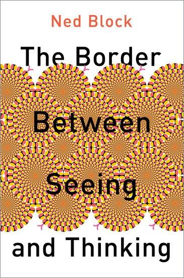
The Border between Seeing and Thinking
Oxford University Press, 2022
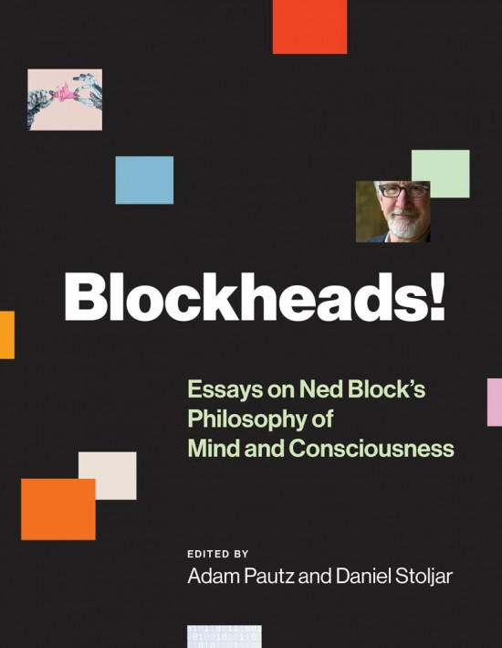
Blockheads! Essays on Ned Block’s Philosophy of Mind and Consciousness
MIT Press, 2019
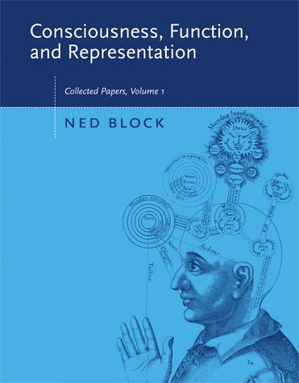
Consciousness, Function, and Representation
MIT Press, 2007
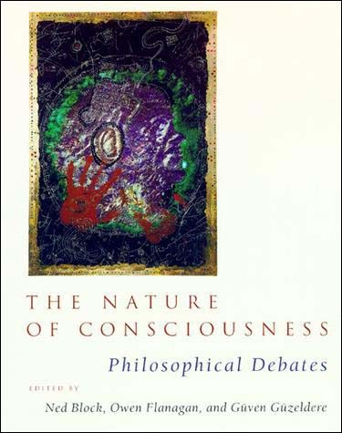
The Nature of Consciousness: Philosophical Debates
MIT Press, 1997
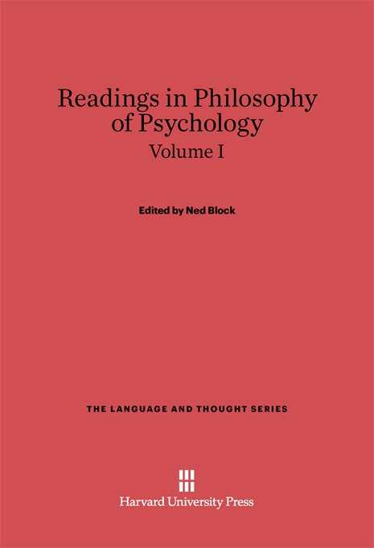
Readings in Philosophy of Psychology, Volume I
Harvard University Press, 1983
Readings in Philosophy of Psychology, Volume II
Harvard University Press, 1983
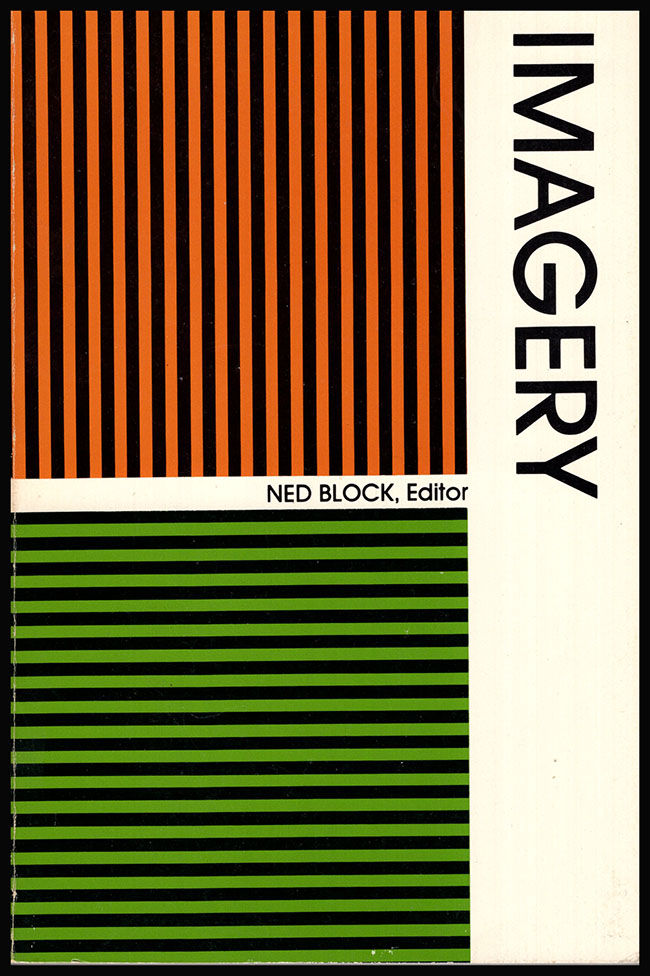
Imagery
MIT Press, 1981
Reviews
Named Lectures
- 2003 Petrus Hispanus Lectures, University of Lisbon
- 2004 Lone Star Tourist (lectures at U. of Texas at Austin, Rice U., U. of Houston, Texas A&M)
- 2005 Burman Lectures, University of Umea
- 2005 Francis W. Gramlich Memorial Lecture, Dartmouth College
- 2008 Townsend Visitor, University of California at Berkeley
- 2009 Jack Smart Lecturer, Australian National University.
- 2009 Lansdowne Lecturer, University of Victoria
- 2010 Annual Lectures, Royal Institute of Philosophy
- 2010 Josiah Royce Lectures, Brown University
- 2010 Kretzmann Lecture for Undergraduates, Cornell University
- 2011 Thalheimer Lectures, Johns Hopkins University
- 2012 William James Lectures, Harvard University
- 2012 Rudolf Carnap Lectures (with Susan Carey), Ruhr-Universitat Bochum
- 2012 Immanuel Kant Lectures, Stanford University
- 2013 John Locke Lectures, Oxford University
- 2014 Jean Nicod Lectures, Ecole Normale Superieure
- 2014 Nadine Andreas Lectures, Minnesota State University
- 2014 New Crop Visitor, University of California at Berkeley
- 2014 Kim Young-Jung Memorial Lectures, Seoul National University
- 2015 Jose Gaos Lectures, Instituto de Investigaciones Filosoficas, National Autonomous University of Mexico (UNAM)
- 2015 Marc Jeannerod Lecture, University of Antwerp
- 2016 Sanders Lecture, American Philosophical Association
- 2016 Ernst Robert Curtius Lectures, Universitat Bonn
- 2017 Heidelberger Kompaktseminar, Universitat Heidelberg
- 2017 Pinkel Lecture, University of Pennsylvania
- 2017 SINe Medal, Italian Society for Neuroethics
- 2019 Jerrold Katz Memorial Lecture, City University Graduate Center
- 2021 Kretzmann Lecture for Undergraduates, Cornell University
Online Videos
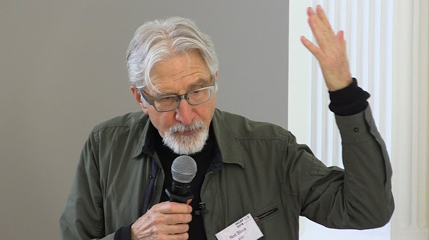
Thinking, Seeing and Consciousness
Talk at International Association for Computing and Philosophy Annual Meeting in Warsaw, 2018
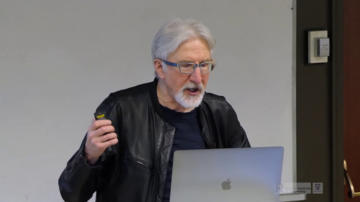
How to Think About the Border Between Seeing and Thinking
Rotman Institute of Philosophy, University of Western Ontario, 2018
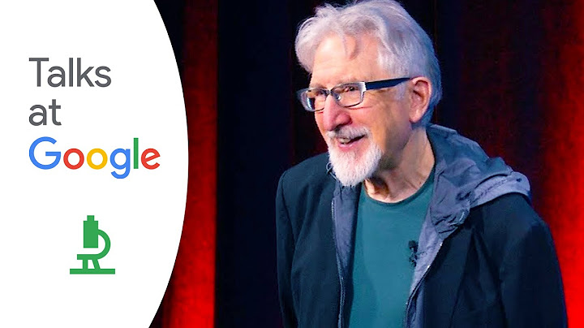
Why AI Approaches to Cognition Won't Work for Consciousness
Google, June 14, 2017
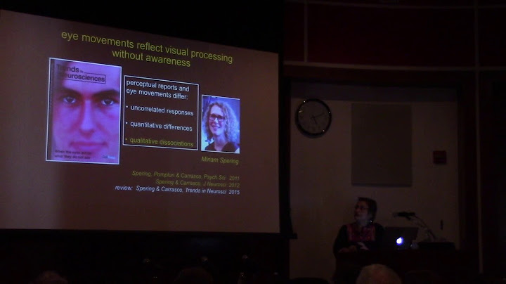
Debate on whether there is unconscious perception
with Marisa Carrasco, Hakwan Lau, Megan Peters and I, 2017
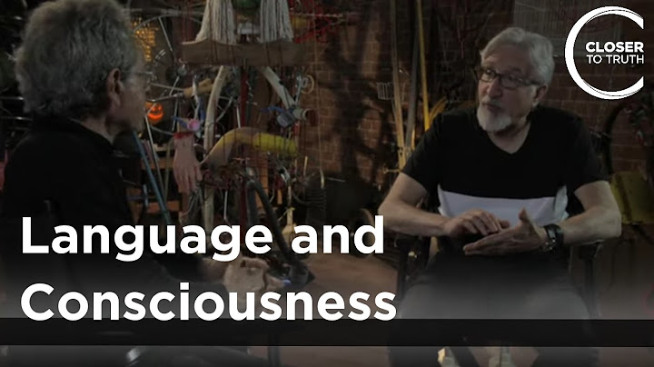
What is Consciousness?
PBS 2015 Closer to the Truth series
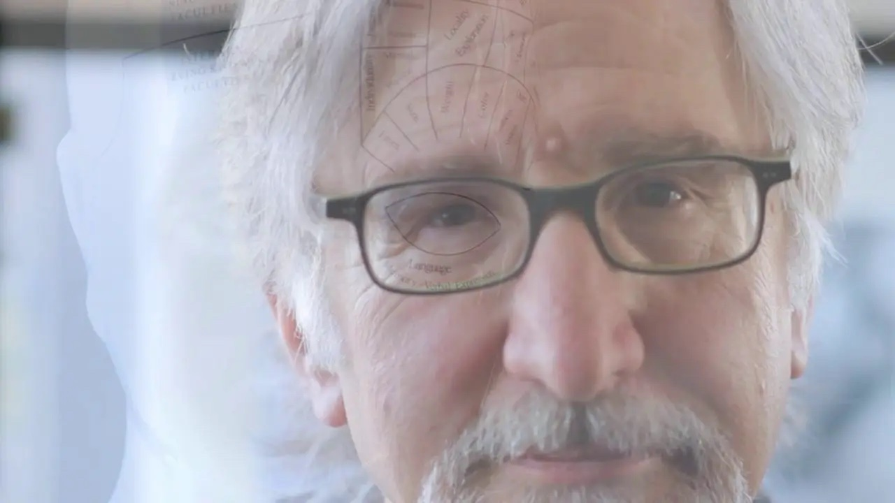
What is Consciousness?
2013 Interview and music by Joe LeDoux on a Scientific American site

Ned Block Challenges Enactivism
British Wittgenstein Society, 2013
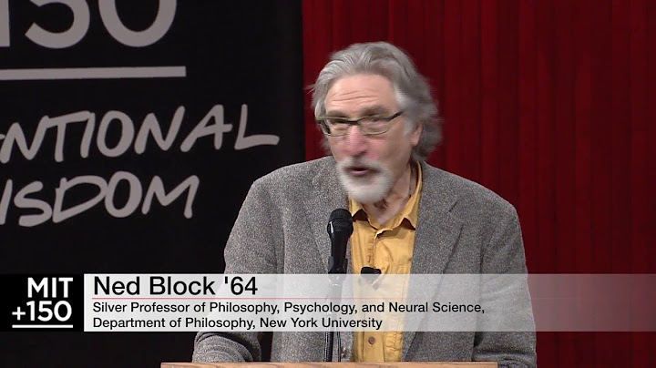
Consciousness and Intelligence
Panel Discussion with Giulio Tononi, Christof Koch, and Shimon Ullman
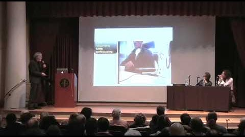
Darwin Day 2011
Panel Discussion with Jaqueline Gottlieb and Massimo Pigliucci

Consciousness as Illusion
Closer to the Truth: Cosmos, Consciousness, God
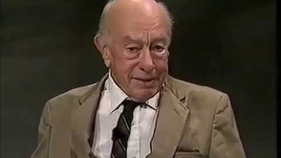
Interview with W. V. Quine
In Conversation: W. V. Quine - The Block Panel
Publications
- "Do conscious decisions cause physical actions?" forthcoming in Philosophers and Neuroscientists in Conversation. U. Maoz and W. Sinnott-Armstrong. Cambridge MA, MIT Press, 2021
- Omri Raccah, Ned Block and Kieran C.R. Fox, "Does the prefrontal cortex play a necessary role in consciousness? Insights from intracranial electrical stimulation of the human brain," The Journal of Neuroscience, 41, pp. 2076-2087, 2021
- Jason Samaha, Ned Block and Rachel Denison, "What do models of visual perception tell us about visual phenomenology"? Neuroscience and Philosophy. F. De Brigard and W. Sinnott-Armstrong. Cambridge, MA, MIT Press, 2021
- "Finessing the Bored Monkey Problem," Trends in Cognitive Sciences, 24(3): 167-168. 2020 This is a response to Ian Phillips and Jorge Morales, "The Fundamental Problem with No-Cognition Paradigms," Trends in Cognitive Sciences, 2020
- "What is wrong with the no-report paradigm and how to fix it", in Trends in Cognitive Sciences 2019, 23, 1003-1013
- "If perception is probabilistic, why doesn't it seem probabilistic?" Philosophical Transactions of the Royal Society B in a special issue on perceptual consciousness and cognitive access, 2018, Volume 373, #1755.
- "Conscious Machines: Defining Questions", Olivia Carter, Jakob Hohwy, Jeroen van Boxtel, Victor Lamme, Ned Block, Christof Koch, Naotsugu Tsuchiya, Science 359, 6374, 2018, p. 400. Response to Stanislas Dehaene, Hakwan Lau & Sid Kouider, "What is consciousness and could machines have it?" Science 358, 6362, 486-492
- "Does Unconscious Perception Really Exist?" 2017 in Neuroscience of Consciousness 3 (1), contributions by Megan Peters, Robert Kentridge, Ian Phillips and myself.
- "Measuring away an intentional confound?" by Jorge Morales, Yasha Mouradi, Claire Sergent, Ned Block, Vincent Taschereau-Dumouchel, David Rosenthal, Piercesare Grimaldi and Hakwan Lau, Neuroscience of Consciousness 1 (1), 2017.
- 'Tweaking the Concepts of Perception and Cognition,' Comment on Chaz Firestone and Brian Scholl, Cognition does not affect perception: Evaluating the evidence for 'top-down' effects, The Behavioral and Brain Sciences, 2016
- 'The Anna Karenina Principle and Skepticism about Unconscious Perception', in Philosophy and Phenomenological Research, 2016, DOI: 10.1111/phpr.12258.
- 'Unconscious seeing', a debate with Ian Phillips in B. Nanay (ed.) Current Controversies in Philosophy of Perception, Routledge, 2016
- 'The Puzzle of Perceptual Precision', in Jennifer Windt & Thomas Metzinger (Eds.), MIND Anniversary Collection: Barbara-Wengeler-Stiftung, 2015. Whole book available free here. Two volume set from MIT Press, Open MIND, Philosophy and the Mind Sciences in the 21st Century, 2016, edited by Jennifer Windt & Thomas Metzinger
- Commentary by Sascha Benjamin Fink, 'Phenomenal Precision and Some Possible Pitfalls'
- 'Solely Generic Phenomenology', a reply to Fink
- 'The Canberra Plan Neglects Ground', 2015, in Qualia and Mental Causation in a Physical World: Themes from the Philosophy of Jaegwon Kim, edited by Terence Horgan, Marcelo Sabates and David Sosa, Cambridge University Press.
- Ned Block, David Carmel, Stephen M. Fleming, Robert W. Kentridge, Christof Koch, Victor A.F. Lamme, Hakwan Lau, David Rosenthal, Consciousness science: real progress and lingering misconceptions, Trends in Cognitive Sciences Vol.18, 2014. Early View; K. Paller, S. Suzuki, Response to Block et al.: first-person perspectives are both necessary and troublesome for consciousness science
- 'Consciousness, Big Science and Conceptual Clarity', 2014. The Future of the Brain: Essays by the World's Leading Neuroscientists, Gary Marcus and Jeremy Freeman (eds.), Princeton University Press
- 'Seeing-As in the Light of Vision Science,' Philosophy and Phenomenological Research with a reply by Tyler Burge, 2014. Article first published online: 24 AUG 2014 | DOI: 10.1111/phpr.12135
- 'Rich conscious perception outside focal attention', Trends in Cognitive Sciences Vol. 18, Issue 9, p445 to 447, 2014
- 'The Defective Armchair: A Reply to Tye,' Thought: A Journal of Philosophy, First published online, 2 June, 2014
- 'Seeing and Windows of Integration,' Thought: A Journal of Philosophy. First published online 30 AUG 2013: DOI: 10.1002/tht62.
- Ned Block and Susanna Siegel, 'Attention and Perceptual Adaptation,' Behavioral and Brain Sciences 36:3, p. 25-26, 2013
- 'The Grain of Vision and the Grain of Attention,' Thought: A Journal of Philosophy. Volume 1, Issue 3, September 2012. First published online: 3 JAN 2013 DOI: 10.1002/tht3.28
- Naotsugu Tsuchiya, Ned Block, Christof Koch, 'Top-down attention and consciousness: comment on Cohen et al.' Trends in Cognitive Sciences 16, 11, 2012, p. 527
- J.Kevin O'Regan & Ned Block, 'Discussion of J. Kevin O'Regan's Why Red Doesn't Sound Like a Bell: Understanding the Feel of Consciousness', The Review of Philosophy and Psychology, 2012
- 'Response to Kouider, et al.: which view is better supported by the evidence.' Replies to Kouider, et. al. and Overgaard & Grunbaum, Trends in Cognitive Sciences, Vol 16, No. 3, March, 2012
- 'Perceptual consciousness overflows cognitive access'. Trends in Cognitive Sciences December 15, 12, 2011, p 567-575
- 'The Higher Order Approach to Consciousness is Defunct,' Analysis, Volume 71, No. 3, July 2011, 419-431.
- 'The Anna Karenina Theory of the Unconscious, in Neuropsychoanalysis, 2011, 13 (1)
- 'What was I Thinking?' Review of Antonio Damasio, Self Comes to Mind: Constructing the Conscious Brain, New York Times Book Review, November 28, 2010
- 'Attention and Mental Paint', in Philosophical Issues 20, 2010, p. 23-63
- Ned Block and Philip Kitcher, 'Misunderstanding Darwin', Boston Review, March, 2010 review of Jerry Fodor and Massimo Piattelli-Palmarini, What Darwin Got Wrong
- 'Comparing the Major Theories of Consciousness,' The Cognitive Neurosciences IV, Michael Gazzaniga (ed.) MIT Press, 2009
- 'Consciousness and Cognitive Access', Proceedings of the Aristotelian Society, 108, Issue 1 pt 3 (October 2008), p. 289-317.
- 'Consciousness, Accessibility and the Mesh between Psychology and Neuroscience,' in Behavioral and Brain Sciences 30, 2007, 481-548, along with 32 commentaries (available here) by Balog, Burge, Byrne Hilbert & Siegel, Clark & Kiverstein, Gopnik, Grush, Harman, Hulme & Whitely, Izard Quinn & Most, Jacob, Kentridge, Koch & Tsuchiya, Kouider, Gardelle & Dupoux, Lamme, Landman & Sligte, Lau & Persaud, Laureys, Levine, Lycan, Malach, McDermott, Naccache & Dehaene, O'Regan & Myin, Prinz, Rosenthal, Sergent & Rees, Shanahan & Baars, Snodgrass & Lepisto, Spener, Tye and Van Gulick; and author's replies.
- 'Wittgenstein and Qualia', Philosophical Perspectives 21, 1, 2007: 73-115, edited by John Hawthorne. The version linked to here is a substantially revised version that is coming out in a volume edited by Maria Baghramian in honor of Hilary Putnam as part of Oxford University Press's Mind Association Occasional Series
- 'Max Black's Objection to Mind-Body Identity', in Oxford Studies in Metaphysics, II, edited by Dean Zimmerman with replies by John Perry and Stephen White, Oxford University Press, 2006, p. 3-78. White's reply here. Table of Contents here. Also in Torin Alter and Sven Walter (eds.), Phenomenal Concepts and Phenomenal Knowledge, Oxford University Press, 2006, 249-306. (Amusingly, the simultaneous OUP publications of this article were copy-edited by different copy-editors, leading to slightly different versions.)
- 'Bodily Sensations as an Obstacle for Representationism', in Pain: New Essays on Its Nature and the Methodology of Its Study, edited by Murat Aydede, MIT Press, 2005, 137-142
- Review of Alva Noe, Action in Perception, The Journal of Philosophy, CII, 5, May 2005, 259-272.
- 'Two Neural Correlates of Consciousness' This is a longer version of a paper in Trends in Cognitive Sciences, vol (9), 2, February 2005 The shorter published version is here. This paper was the top download from the Trends in Cognitive Sciences web site of 2005 and was on ScienceDirect's list of the Top 25 Hottest Articles of January-March, 2005 in the category of Neuroscience.
- 'The merely verbal problem of consciousness', Trends in Cognitive Sciences, vol (9), 6, June 2005. Reply to Baars and Laureys
- Review of Patricia Churchland's Brain-wise, Science 301, 2003, p. 1328
- 'Mental Paint' in Reflections and Replies, a book of essays on Tyler Burge, with replies by Burge, edited by Martin Hahn and Bjorn Ramberg and published by MIT Press, 2003. Here is Burge's reply to this paper (perhaps slightly different from the published version).
- 'Do Causal Powers Drain Away?' Philosophy and Phenomenological Research Vol. 67, No. 1 (July 2003), pp. 110-127, with a reply by Jaegwon Kim, 'Blocking Causal Drainage and other Chores with Mental Causation'.
- 'Spatial Perception via Tactile Sensation', (or here) Trends in Cognitive Sciences Volume 7, Issue 7, July 2003, Pages 285-286. This is a reply to Susan Hurley and Alva Noe, 'Neural plasticity and consciousness'. (Note: the journal incorrectly reversed the noun phrases in the title.) Hurley's and Noe's reply to me, 'Neural plasticity and consciousness: Reply to Block' from the August, 2003 issue.
- 'The Harder Problem of Consciousness', from The Journal of Philosophy XCIX, No. 8, August 2002, 1-35. The version that came out in The Journal of Philosophy (here) was shortened considerably because of space limitations in the journal. Some of the cuts have been restored in the version linked to first above and in the version that appeared in Disputatio 15, November 2003.) For critiques, see Brian McLaughlin, 'A Naturalist-Phenomenal Realist Response To Block's Harder Problem', Philosophical Issues, 13, (2003):163-204 (The version linked to here may be slightly different from the published version.), and Jakob Hohwy, 'Evidence, Explanation, and Experience: On the Harder Problem of Consciousness' Journal of Philosophy, Volume CI, Number 5, May 2004 pp. 242-254 (Again, the version linked to here may be slightly different from the published version.)
- 'Concepts of Consciousness' In Philosophy of Mind: Classical and Contemporary Readings, David Chalmers (ed.) Oxford University Press, 2002.
- 'Paradox and Cross Purposes in Recent Work on Consciousness'. This is an expanded and revised version of a commentary on all the papers in a special issue of Cognition (April, 2001) on the state of the art in the neuroscience of consciousness. (The special issue has come out separately: Stan Dehaene, ed., The Cognitive Neuroscience of Consciousness, M.I.T. Press, 2001) Two philosophersЄan Dennett and Iзere asked to comment on all the scientists' papers. (We both made some comments on each others' papers as well). Dennett's paper is available by clicking here. If you want to see the papers that Dennett and I commented on, see Cognition, Volume 79, Issues 1-2, Pages 1-237 (April 2001)
- 'Behaviorism Revisited'. This is a comment on J. K. O_Regan. and Alva Noe, 'A Sensorimotor Account of Vision and Visual Consciousness' The Behavioral and Brain Sciences 2001 (24:5).
- 'Sexism, Racism, Ageism and the Nature of Consciousness', in The Philosophy of Sydney Shoemaker, Philosophical Topics, 26, 1 and 2, 1999. Edited by Richard Moran, Jennifer Whiting, and Alan Sidelle.
- 'Conceptual Analysis, Dualism and the Explanatory Gap' (with Robert Stalnaker) The Philosophical Review, January, 1999.
- 'Is Experiencing Just Representing?' (in a symposium on Michael Tye in Philosophy and Phenomenological Research, September, 1998).
- 'How Not to Find the Neural Correlate of Consciousness' (in a volume of Royal Institute of Philosophy lectures edited by Anthony O'Hear, 1998 and republished as Comment ne pas trouver le corrlat neuronal de la conscience in Intellectica 31, 2000).
- 'Anti-Reductionism Slaps Back' Appeared in Mind, Causation, World, Philosophical Perspectives 11, 1997, 107-133.
- 'How can we find the neural correlate of consciousness?', Trends in Neurosciences 19, 11, 1996, 456-459. Revised version from my Collected Papers, Volume 1, here.
- 'On a Confusion about a Function of Consciousness' The Behavioral and Brain Sciences 18, 2, 1995, 227-287. There is a corrected version of this article in Block, Flanagan and G|zeldere, The Nature of Consciousness: Philosophical Debates (MIT Press, 1997). There was a second round of critiques by Joseph Bogen, Selmer Bringsjord, Derek Browne, David Chalmers, Denise Gamble, Daniel Gilman, Gven Gzeldere and Murat Aydede, Bruce Mangan, Alva Noe, Ernst Poppel, David Rosenthal, A.H.C. van der Heijden, P.T.W. Hudson and A.G. Kurvink. These critiques plus replies appeared in 1997: 'Biology versus computation in the study of consciousness', Behavior and Brain Sciences 20:1, 159-165, 1997
- 'How Heritability Misleads about Race' (Cognition 56, 1995: pp. 99-128).
- Shortened version of 'How Heritability Misleads about Race', 'Race, Genes and IQ', or here (Boston Review, 1996).
- 'What is Dennett's Theory a Theory of?' (Philosophical Topics 22, 1 and 2, 1994, pp. 23-40).
- 'An Argument for Holism', in Proceedings of the Aristotelian Society, New Series, Vol XCIV, 1995, p.151-169.
- I can supply articles prior to 1995 that are not included here, if you send me an email.
- 'Evidence against Epiphenomenalism', from Behavioral and Brain Sciences, 14, 1991
- Can the Mind Change the World? In George S. Boolos (ed.), Meaning and Method: Essays in Honor of Hilary Putnam. Cambridge University Press. 1989, 137--170.
- "Functional Role and Truth Conditions," Proceedings of the Aristotelian Society 61: 157-181, 1988
- 'Mental Pictures and Cognitive Science' (The Philosophical Review, Volume 92, 4, Oct. 1983, pages 499-541.) Accessing this paper requires a password. The paper is available without the password from JSTOR, although you may not be able to get it without a university account or a paid subscription.
- 'Psychologism and Behaviorism', PDF version; from The Philosophical Review LXXXX, No. 1, January 1981, 5-43.
- 'Troubles with Functionalism', Minnesota Studies in the Philosophy of Science 9:261-325. 1978 scan. Jim Pryor's notes. In 1981, I divided the paper into two parts, a much expanded version of the part on what functionalism is, here. And the argument against the clarified functionalism, here.
- Review of Julian Jaynes, The Origin of Consciousness in the Breakdown of the Bicameral Mind, Boston Globe, March, 6, 1977, p. A17
- N.Block & J.A.Fodor, 'What Psychological States are Not'. The Philosophical Review 81, 2, 1972: p. 159-181. Spanish version: Lo Que No Son Los Estados Psicolgicos
- 'Consciousness', in S. Guttenplan (ed), A Companion to Philosophy of Mind, Blackwell: Oxford, 1994
- 'Consciousness'(in R. Gregory (ed.) Oxford Companion to the Mind, second edition 2004) Russian version here
- 'Qualia' (in R. Gregory (ed.) Oxford Companion to the Mind, second edition, 2004)
- 'Consciousness' (in Encyclopedia of Cognitive Science, edited by Lynn Nadel. New York, NY, Nature Publishing Group, 2003.)
- 'Holism, Mental and Semantic' (in The Routledge Encyclopedia of Philosophy, 1998)
- 'Semantics, Conceptual Role' (in The Routledge Encyclopedia of Philosophy, 1998)
- 'What is Functionalism?' (a revised version of the entry on functionalism in The Encyclopedia of Philosophy Supplement, Macmillan, 1996). Russian translation. Spanish translation, Traducción de Joel J. Lorenzatti. El funcionalismo (2015). Cuadernos Filosóficos. Segunda Época (XII) (ISSN 1850-3667). Publicado con autorización del autor.
- Expanded version from Readings in Philosophy of Psychology, Volume 1, Harvard University Press, 1980
- 'The Mind as the Software of the Brain' (An Invitation to Cognitive Science, edited by D. Osherson, L. Gleitman, S. Kosslyn, E. Smith and S. Sternberg, MIT Press, 1995)
- 'Qualia' from S. Guttenplan (ed) A Companion to Philosophy of Mind, Blackwell: Oxford
Honors and Awards
- Fellow of the American Academy of Arts and Sciences
- Fellow of the Cognitive Science Society
- Guggenheim Fellow
- Senior Fellow of the Center for the Study of Language and Information
- Sloan Foundation Fellow at the University of California, Berkeley
- Faculty member at two National Endowment for the Humanities Summer Institutes and two Summer Seminars
- Fellowship from the National Endowment for the Humanities
- Fellowship from the American Council of Learned Societies
- Fellowship from National Science Foundation
- Recipient of the Robert A. Muh Alumni Award in Humanities and Social Science from MIT
- Recipient of Jean Nicod Prize
- Recipient of Ecole Normale Superieure, Paris
- Dr. Martin R. Lebowitz and Eve Lewellis Lebowitz Prize for Philosophical Achievement and Contribution
jointly
with Ian Phillips, 2021
- The Philosophers' Annual "Ten Best" Papers, 1983, 1990, 1995, 2002, 2010
- Past President of the Society for Philosophy and Psychology
- Past Chair of the MIT Press Cognitive Science Board
- Past President of the Association for the Scientific Study of Consciousness
Teaching
Undergraduate
Graduate
- Mind & Language Seminar, Spring 2021 (with David Chalmers)
- Philosophy of Perception, PHIL-GA 2294, Fall 2019
- Advanced Introduction to Philosophy of Mind, with David Chalmers, Fall 2018
- Philosophy of Perception, with Ian Phillips, Spring 2018
- The Perception/Cognition Border with Eric Mandelbaum, Fall 2016
- The Perception/Cognition Border, with Eric Mandelbaum, Fall 2014
- Conceptual and Empirical Issues about Perception, Attention and Consciousness Spring 2011 (with David
Carmel)
- Seminar on Mind & Language, Spring 2010 (joint CUNY course with Jesse Prinz)
- Philosophical and Empirical Issues about Consciousness, Fall 2008 (joint Columbia/NYU course with Hakwan
Lau)
- Consciousness, Action and Attention, Spring 2008
- Percepts and Concepts, Fall 2005 (with Michael Strevens)
- Research Seminar on Language and Mind: Consciousness, Spring 2005 (with Thomas Nagel)
- Advanced Introduction to Philosophy of Mind, Fall 2003
- Philosophy of Mind: Consciousness, Fall 2001
- Research Seminar on Language and Mind: Consciousness, Spring 2000 (with Thomas Nagel)
- Research Seminar on Language and Mind: Concepts, Spring 1998 (with Paul Boghossian)
- Research Seminar on Language and Mind: Consciousness, Spring 1997 (with Thomas Nagel)
- Metaphysics: Causation, Fall 1997 (with Hartry Field)